?airquality2 Linear Regression
2.1 Fitting a simple linear regression
Let’s start with the basics. For this chapter, we will rely a lot on the airquality data, which is one of the built-in datasets in R.
More info on the airquality data
Most datasets in R have a help file. Thus, if you don’t know the data set, have a look at the description via pressing F1 with the curses on the word, or via typing
As you can read, the datasets comprises daily air quality measurements in New York, May to September 1973. You can see the structure of the data via
str(airquality)Variables are described in the help. Note that Month / Day are currently coded as integers, would be better coded as date or (ordered) factors (something you could do later, if you use this dataset).
Let’s say we want to examine the relationship between Ozone and Wind in these data.
plot(Ozone ~ Wind, data = airquality)
OK, I would say there is some dependency here. To quantify this numerically, we want to fit a linear regression model through the data with the lm() function of R. We can do this in R by typing
fit = lm(Ozone ~ Wind, data = airquality)This command creates a linear regression model that fits a straight line, adjusting slope and intercept to get the best fit through the data. We can see the fitted coefficients if we print the model object
fit
Call:
lm(formula = Ozone ~ Wind, data = airquality)
Coefficients:
(Intercept) Wind
96.873 -5.551
Note
The function name lm is short for “linear model”. Remember from your basic stats course: This model is not called linear because we necessarily fit a linear function. It’s called linear as long as we express the response (in our case Ozone) as a polynomial of the predictor(s). A polynomial ensures that when estimating the unknown parameters (we call them “effects”), they all affect predictions linearly, and can thus be solved as a system of linear equations.
So, an lm is any regression of the form \(y = \operatorname{f}(x) + \mathcal{N}(0, \sigma)\), where \(\operatorname{f}\) is a polynomial, e.g. \({a}_{0} + {a}_{1} \cdot x + {a}_{2} \cdot {x}^{2}\), and \(\mathcal{N}(0, \sigma)\) means that we assume the data scattering as a normal (Gaussian) distribution with unknown standard deviation \(\sigma\) around \(\operatorname{f}(x)\).
Understanding how the lm works
To understand how the lm works, we will estimate a lm using a custom likelihood function:
- Create some toy data:
Xobs = rnorm(100, sd = 1.0)
Y = 0.0+1.0*Xobs + rnorm(100,sd = 0.2)- Define the likelihood function and optimize the parameters (slope+intercept):
likelihood = function(par) { # three parameters now
lls = dnorm(Y, mean = Xobs*par[2]+par[1], sd = par[3], log = TRUE)
# calculate for each observation the probability to observe the data given our model
# we use the logLikilihood because of numerical reasons
return(sum(lls))
}
likelihood(c(0, 0, 0.2))[1] -1328.254opt = optim(c(0.0, 0.0, 1.0), fn = function(par) -likelihood(par), hessian = TRUE )
opt$par[1] -0.01770037 1.00544470 0.17984788- Test the estimated parameters against 0 (standard errors can be derived from the hessian of the MLE): Our true parameters are 0.0 for the intercept, 1.0 for the slope, and 0.22 for the sd of the observational error:
- calculate standard error
- calculate t-statistic
- calculate p-value
st_errors = sqrt(diag(solve(opt$hessian)))
st_errors[2][1] 0.01735754t_statistic = opt$par[2] / st_errors[2]
pt(t_statistic, df = 100-3, lower.tail = FALSE)*2[1] 4.712439e-77The p-value is smaller than \(\alpha\), so the effect is significant! Let’s compare it against the output of the lm function:
model = lm(Y~Xobs) # 1. Get estimates, MLE
model
Call:
lm(formula = Y ~ Xobs)
Coefficients:
(Intercept) Xobs
-0.01767 1.00543 summary(model) # 2. Calculate standard errors, CI, and p-values
Call:
lm(formula = Y ~ Xobs)
Residuals:
Min 1Q Median 3Q Max
-0.37768 -0.10133 0.00245 0.10821 0.57248
Coefficients:
Estimate Std. Error t value Pr(>|t|)
(Intercept) -0.01767 0.01818 -0.972 0.333
Xobs 1.00543 0.01753 57.345 <2e-16 ***
---
Signif. codes: 0 '***' 0.001 '**' 0.01 '*' 0.05 '.' 0.1 ' ' 1
Residual standard error: 0.1817 on 98 degrees of freedom
Multiple R-squared: 0.9711, Adjusted R-squared: 0.9708
F-statistic: 3288 on 1 and 98 DF, p-value: < 2.2e-162.2 Interpreting the fitted model
We can get a more detailed summary of the statistical estimates with the summary() function.
summary(fit)
Call:
lm(formula = Ozone ~ Wind, data = airquality)
Residuals:
Min 1Q Median 3Q Max
-51.572 -18.854 -4.868 15.234 90.000
Coefficients:
Estimate Std. Error t value Pr(>|t|)
(Intercept) 96.8729 7.2387 13.38 < 2e-16 ***
Wind -5.5509 0.6904 -8.04 9.27e-13 ***
---
Signif. codes: 0 '***' 0.001 '**' 0.01 '*' 0.05 '.' 0.1 ' ' 1
Residual standard error: 26.47 on 114 degrees of freedom
(37 observations deleted due to missingness)
Multiple R-squared: 0.3619, Adjusted R-squared: 0.3563
F-statistic: 64.64 on 1 and 114 DF, p-value: 9.272e-13In interpreting this, recall that:
- “Call” repeats the regression formula.
- “Residuals” gives you an indication about how far the observed data scatters around the fitted regression line / function.
- The regression table (starting with “Coefficients”) provides the estimated parameters, one row for each fitted parameter. The first column is the estimate, the second is the standard error (for 0.95 confidence interval multiply with 1.96), and the fourth column is the p-value for a two-sided test with \({H}_{0}\): “Estimate is zero”. The t-value is used for calculation of the p-value and can usually be ignored.
- The last section of the summary provides information about the model fit.
- Residual error = Standard deviation of the residuals,
- 114 df = Degrees of freedom = Observed - fitted parameters.
- R-squared \(\left({R}^{2}\right)\) = How much of the signal, respective variance is explained by the model, calculated by \(\displaystyle 1 - \frac{\text{residual variance}}{\text{total variance}}\).
- Adjusted R-squared = Adjusted for model complexity.
- F-test = Test against intercept only model, i.e. is the fitted model significantly better than the intercept only model (most relevant for models with > 1 predictor).
2.3 Visualizing the results
For a simple lm and one predictor, we can visualize the results via
plot(Ozone ~ Wind, data = airquality)
abline(fit)
A more elegant way to visualize the regression, which also works once we move to generalized linear models (GLM) and multiple regression, is using the effects package. The base command to visualize the fitted model is:
library(effects)
plot(allEffects(fit, partial.residuals = T))
The blue line is the fitted model (with confidence interval in light blue). When using the argument partial.residuals = T, purple circles are the data, and the purple line is a nonparametric fit to the data. If the two lines deviate strongly, this indicates that we may have a misspecified model (see next section on residual checks).
2.4 Residual checks
The regression line of an lm, including p-values and all that, is estimated under the assumptions that the residuals scatter iid normal. If that is not (approximately) the case, the results may be nonsense. Looking at the results of the effect plots above, we can already see a first indication that there may be a problem.
What we see highlighted here is that the data seems to follow a completely different curve than the fitted model. The conclusion here would be: The model we are fitting does not fit to the data, we should not interpret its outputs, but rather say that we reject it, it’s the wrong model, we have to search for a more appropriate description of the data (see next section, “Adjusting the functional form”).
2.4.1 LM residual plots
To better analyse these residuals (and potential problems), R offers a function for residual plots. It produces 4 plots. I think it’s most convenient plotting them all into one figure, via the command par(mfrow = c(2, 2)), which produces a figure with 2 x 2 = 4 panels.
par(mfrow = c(2, 2))
plot(fit)
Interpretation of the panels:
- Residuals vs Fitted: Shows misfits and wrong functional form. Scattering should be uniformly distributed.
- Normal Q-Q: Checks if residuals follow an overall normal distribution. Bullets should lie on the line in the middle of the plot and may scatter a little bit at the ends.
- Scale - Location: Checks for heteroskedasticity. Does the variance change with predictions/changing values? Scattering should be uniformly distributed.
- Residuals vs Leverage: How much impact do outliers have on the regression? Data points with high leverage should not have high residuals and vice versa. Bad points lie in the upper right or in the lower right corner. This is measured via the Cook’s distance. Distances higher than 0.5 indicate candidates for relevant outliers or strange effects.
Note
The plot(model) function should ONLY be used for linear models, because it explicitly tests for the assumptions of normally distributed residuals. Unfortunately, it also works for the results of the glm() function, but when used on a GLM beyond the linear model, it is not interpretable.
2.4.2 DHARMa residual plots
The residual plots above only work for testing linear models, because they explicitly test for the assumptions of a normal distribution, which we will relax once we go to more complex models. The DHARMa package provides a general way to perform residual checks for practically any model from the generalized linear mixed-effect model (GLMM) family.
library(DHARMa)
res <- simulateResiduals(fit, plot = T)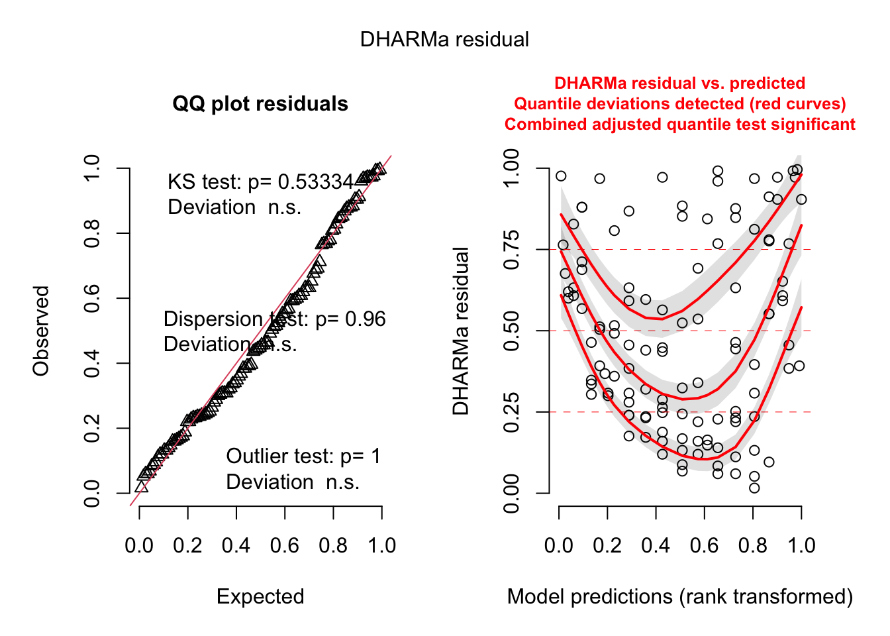
The simulateResiduals() function uses simulations to generate standardized residuals for any GLMM. Standardized means that a uniform distribution of residuals signifies perfect fit. Here, the residuals are saved in the variable res.
The argument plot = T creates a plot with two panels (alternatively, you could also type plot(res)). The left panel is a uniform qq plot (calling plotQQunif), and the right panel shows residuals against predicted values (calling plotResiduals), with outliers highlighted in red.
Very briefly, we would expect that a correctly specified model shows:
a straight 1-1 line, as well as n.s. of the displayed tests in the qq-plot (left) -> evidence for an the correct overall residual distribution (for more details on the interpretation of this plot, see plotQQunif)
visual homogeneity of residuals in both vertical and horizontal direction, as well as n.s. of quantile tests in the res ~ predictor plot (for more details on the interpretation of this plot, see
?plotResiduals)
Deviations from these expectations can be interpreted similar to a linear regression. See the DHARMa vignette for detailed examples.
2.5 Adjusting the Functional Form
2.5.1 Mean vs. variance problems
Looking at the residual plots of our regression model, there are two types of problems, and there is a clear order in which you should solve them:
Systematic misfit of the mean: the first thing we should worry about is if the model describes the mean of the data well, i.e. if our function form (we assumed a straight line) fits to the data. You can see misfit for our model in a) the effects plot, b) the res ~ fitted plot, and c) the DHARMa res ~ fitted plot.
Distributional problems: only if your model fits the mean of the data well should you look at distributional problems. Distributional problems means that the residuals do not scatter as assumed by the regression (for an lm iid normal). The reason why we look only after solving 1) at the distribution is that a misfit can easily create distributional problems.
Here, and in this part of the book in general, we will first be concerned with adjusting the model to describe the mean correctly. In the second part of the book, we will then also turn to advanced options to model the variance
Caution
Important: Residuals are always getting better for more complex models. They should therefore NOT solely be used for automatic model selection, i.e. you shouldn’t assume that the model with the best residuals is necessarily preferable (on how to select models, see section on model selection). The way you should view residual checks is as a rejection test: the question you are asking is if the residuals are so bad that the model needs to be rejected!
2.5.2 R regression syntax
If we see a misfit of the mean, we should adjust the functional form of the model. Here a few options (see Table B.1 for more details):
fit = lm(Ozone ~ Wind, data = airquality) # Intercept + slope.
fit = lm(Ozone ~ 1, data = airquality) # Only intercept.
fit = lm(Ozone ~ Wind - 1 , data = airquality) # Only slope.
fit = lm(Ozone ~ log(Wind), data = airquality) # Predictor variables can be transformed.
fit = lm(Ozone^0.5 ~ Wind, data = airquality) # Output variables can also be transformed.
fit = lm(Ozone ~ Wind + I(Wind^2), data = airquality) # Mathematical functions with I() command.Basically, you can use all these tools to search for a better fit through the data.
Note that if you transform the response variable, you change both the functional form and the spread of the residuals. Thus, this option can change (and often improve) both the mean and distributional problems, and is a common strategy to deal with non-symmetric residuals etc. There is a small convenience function in the package MASS that automatically searches for the best-fitting power transformation of the response.
library(MASS)
boxcox(fit)
In the result, you can see, that the best fit assuming a power transformation is Ozone^k is delivered by k ~= 0.35.
2.5.3 Generalized additive models (GAMs)
Another options to get the fit right are Generalized Additive Models (GAM). The idea is to fit a smooth function to data, to automatically find the “right” functional form. The smoothness of the function is automatically optimized.
library(mgcv)
fit = gam(Ozone ~ s(Wind) , data = airquality)
# allEffects doesn't work here.
plot(fit, pages = 0, residuals = T, pch = 20, lwd = 1.8, cex = 0.7,
col = c("black", rep("red", length(fit$residuals))))
In the summary(), you still get significance for the smoothing term (i.e. a p-value), but given that you fit a line that could go up and down, you don’t get an effect direction.
summary(fit)
Family: gaussian
Link function: identity
Formula:
Ozone ~ s(Wind)
Parametric coefficients:
Estimate Std. Error t value Pr(>|t|)
(Intercept) 42.129 2.194 19.2 <2e-16 ***
---
Signif. codes: 0 '***' 0.001 '**' 0.01 '*' 0.05 '.' 0.1 ' ' 1
Approximate significance of smooth terms:
edf Ref.df F p-value
s(Wind) 2.995 3.763 28.76 <2e-16 ***
---
Signif. codes: 0 '***' 0.001 '**' 0.01 '*' 0.05 '.' 0.1 ' ' 1
R-sq.(adj) = 0.487 Deviance explained = 50%
GCV = 578.45 Scale est. = 558.53 n = 1162.6 Categorical Predictors
The lm() function can handle both numerical and categorical variables. To understand what happens if the predictor is categorical, we’ll use another data set here, PlantGrowth (type ?PlantGrowth or F1 help if you want details). We visualize the data via:
boxplot(weight ~ group, data = PlantGrowth)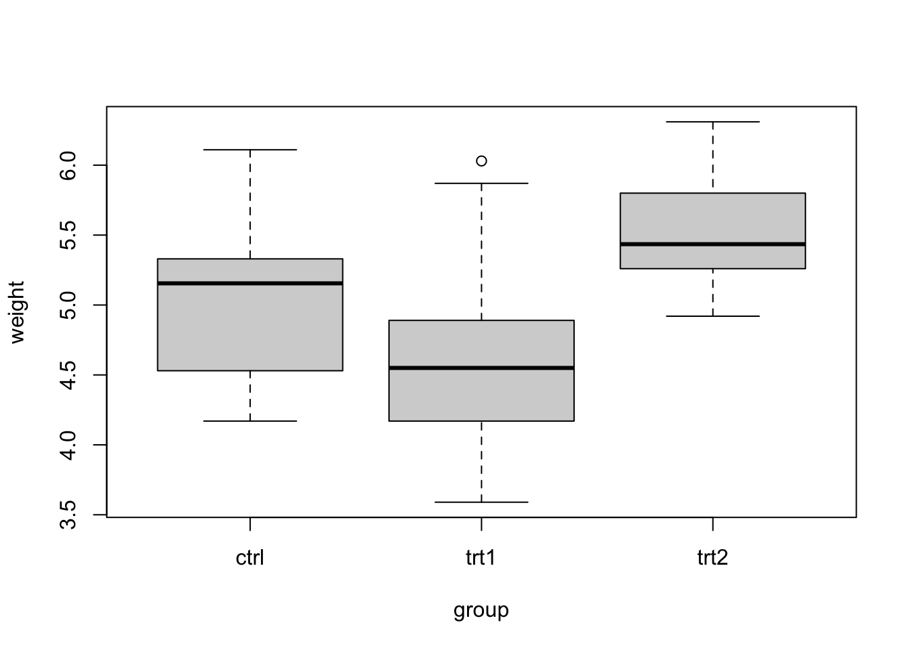
2.6.1 Understanding contrasts
Let’s fit an lm() now with the categorical explanatory variable group. They syntax is the same as before
fit = lm(weight ~ group, data = PlantGrowth)
summary(fit)
Call:
lm(formula = weight ~ group, data = PlantGrowth)
Residuals:
Min 1Q Median 3Q Max
-1.0710 -0.4180 -0.0060 0.2627 1.3690
Coefficients:
Estimate Std. Error t value Pr(>|t|)
(Intercept) 5.0320 0.1971 25.527 <2e-16 ***
grouptrt1 -0.3710 0.2788 -1.331 0.1944
grouptrt2 0.4940 0.2788 1.772 0.0877 .
---
Signif. codes: 0 '***' 0.001 '**' 0.01 '*' 0.05 '.' 0.1 ' ' 1
Residual standard error: 0.6234 on 27 degrees of freedom
Multiple R-squared: 0.2641, Adjusted R-squared: 0.2096
F-statistic: 4.846 on 2 and 27 DF, p-value: 0.01591but the interpretation of the results often leads to confusion. We see effects for trt1 and trt2, but where is ctrl? The answer is: the R is calculating so-called treatment contrasts for categorical predictors. In treatment contrasts, we have a reference level (in our case ctrl), which is the intercept of the model, and then we estimate the difference to the reference for all other factor levels (in our case trt1 and trt2).
Tip
By default, R orders factors levels alphabetically, and thus the factor level that is first in the alphabet will be used as reference level in lm(). In our example, ctrl is before trt in the alphabet and thus used as reference, which also makes sense, because it is scientifically logical to compare treatments to the control. In other cases, it may be that the logical reference level does not correspond to the alphabetical order of the factors. If you want to change which factor level is the reference, you can re-order your factor using the relevel() function. In this case, estimates and p-values will change, because different comparisons (contrasts) are being made, but model predictions will stay the same!
This also becomes clear if we plot the results.
plot(allEffects(fit))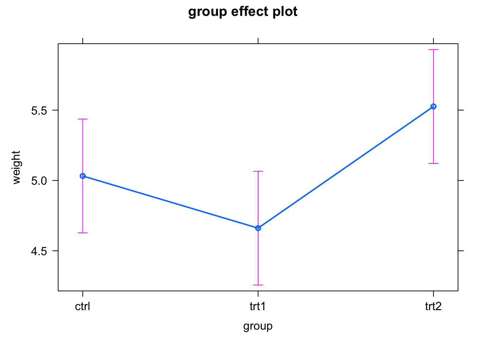
Note that in this case, the effects package depicts the CI by purple error bars.
So, in our example, the intercept estimates the mean weight in the ctr group (with a p-value tested against zero, usually not interesting), and the effects of trt1 and trt2 are the differences of weight compared to the control, with a p-value for a test against an effect size of zero.
More details on contrasts
Treatment contrasts are not the only option to deal with categorical variables. There are many other options to set up contrasts, which may be appropriate in certain situations. A simple way to change contrasts is the following syntax
fit = lm(weight ~ 0 + group, data = PlantGrowth)
summary(fit)
Call:
lm(formula = weight ~ 0 + group, data = PlantGrowth)
Residuals:
Min 1Q Median 3Q Max
-1.0710 -0.4180 -0.0060 0.2627 1.3690
Coefficients:
Estimate Std. Error t value Pr(>|t|)
groupctrl 5.0320 0.1971 25.53 <2e-16 ***
grouptrt1 4.6610 0.1971 23.64 <2e-16 ***
grouptrt2 5.5260 0.1971 28.03 <2e-16 ***
---
Signif. codes: 0 '***' 0.001 '**' 0.01 '*' 0.05 '.' 0.1 ' ' 1
Residual standard error: 0.6234 on 27 degrees of freedom
Multiple R-squared: 0.9867, Adjusted R-squared: 0.9852
F-statistic: 665.5 on 3 and 27 DF, p-value: < 2.2e-16which results in fitting the mean for each factor level. Unfortunately, this syntax option doesn’t generalize to multiple regressions. There are a number of further options for specifying contrasts. You can tell R by hand how the levels should be compared or use some of the pre-defined contrasts. Here is an example:
PlantGrowth$group3 = PlantGrowth$group
contrasts(PlantGrowth$group3) = contr.helmert
fit = lm(weight ~ group3, data = PlantGrowth)
summary(fit)
Call:
lm(formula = weight ~ group3, data = PlantGrowth)
Residuals:
Min 1Q Median 3Q Max
-1.0710 -0.4180 -0.0060 0.2627 1.3690
Coefficients:
Estimate Std. Error t value Pr(>|t|)
(Intercept) 5.07300 0.11381 44.573 < 2e-16 ***
group31 -0.18550 0.13939 -1.331 0.19439
group32 0.22650 0.08048 2.814 0.00901 **
---
Signif. codes: 0 '***' 0.001 '**' 0.01 '*' 0.05 '.' 0.1 ' ' 1
Residual standard error: 0.6234 on 27 degrees of freedom
Multiple R-squared: 0.2641, Adjusted R-squared: 0.2096
F-statistic: 4.846 on 2 and 27 DF, p-value: 0.01591What we are using here is Helmert contrasts, which contrast the second level with the first, the third with the average of the first two, and so on. Which contrasts make most sense depends on the question. For more details, see chapter 10 in Stéphanie M. van den Berg’s book “Analysing Data using Linear Models” and also this paper.
2.6.2 ANOVA
For categorical predictors, one nearly always performs an ANOVA on top of the linear regression estimates. The underlying ideas behind this will be explained in more detail in our section on ANOVA, but just very quickly:
An ANOVA starts with a base model (in this case intercept only) and adds the variable group. It then measures:
- How much the model improves in terms of \({R}^{2}\) (this is in the column Sum Sq).
- If this increase of model fit is significant.
We can run an ANOVA on the fitted model object, using the aov() function:
anov = aov(fit)
summary(anov) Df Sum Sq Mean Sq F value Pr(>F)
group3 2 3.766 1.8832 4.846 0.0159 *
Residuals 27 10.492 0.3886
---
Signif. codes: 0 '***' 0.001 '**' 0.01 '*' 0.05 '.' 0.1 ' ' 1In this case, we would conclude that the variable group (3 levels) significantly improves model fit, i.e. the group overall has a significnat effect, even though the individual contrasts in the original model where not significant.
Note
The situation that the ANOVA is significant, but the linear regression contrasts is often perceived as confusing, but this is perfectly normal and not a contradiction.
In general, the ANOVA is more sensitive, because it tests for an overall effect (thus also has a larger n), whereas the individual contrasts test with a reduced n. Moreover, as we have seen, in the summary of a lm(), for >2 levels, not all possible contrasts are tested. In our example, we estimate p-values for crtl-trt1 and ctrl-trt2, which are both n.s., but we do not test for differences of trt1-trt2 (which happens to be significant).
Thus, the general idea is: 1. ANOVA tells us if there is an effect of the variable at all, 2. summary() tests for specific group differences.
2.6.3 Post-Hoc Tests
Another common test performed on top of an ANOVA or a categorical predictor of an lm() is a so-called post-hoc test. Basically, a post-hoc test computes p-values for all possible combinations of factor levels, usually corrected for multiple testing:
Tukey multiple comparisons of means
95% family-wise confidence level
Fit: aov(formula = fit)
$group3
diff lwr upr p adj
trt1-ctrl -0.371 -1.0622161 0.3202161 0.3908711
trt2-ctrl 0.494 -0.1972161 1.1852161 0.1979960
trt2-trt1 0.865 0.1737839 1.5562161 0.0120064In the result, we see, as hinted to before, that there is a significant difference between trt1 and trt2. Note that the p-values of the post-hoc tests are larger than those of the lm summary(). This is because post-hoc tests nearly always correct p-values for multiple testing, while regression estimates are usually not corrected for multiple testing (you could of course if you wanted).
Note
Remember: a significance test with a significance threshold of alpha = 0.05 has a type I error rate of 5%. Thus, if you make 20 tests, you would get at least one significant result, even if there are no effects whatsoever. Corrections for multiple testing are used to compensate for this, usually aiming at controlling the family-wise error rate (FWER), the probability of making one or more type I errors when performing multiple hypotheses tests.
2.6.4 Compact Letter Display
It is common to visualize the results of the post-hoc tests with the so-called Compact Letter Display (cld). This doesn’t work with the base TukeyHSD function, so we will use the multcomp pacakge:
library(multcomp)
fit = lm(weight ~ group, data = PlantGrowth)
tuk = glht(fit, linfct = mcp(group = "Tukey"))
summary(tuk) # Standard display.
Simultaneous Tests for General Linear Hypotheses
Multiple Comparisons of Means: Tukey Contrasts
Fit: lm(formula = weight ~ group, data = PlantGrowth)
Linear Hypotheses:
Estimate Std. Error t value Pr(>|t|)
trt1 - ctrl == 0 -0.3710 0.2788 -1.331 0.3909
trt2 - ctrl == 0 0.4940 0.2788 1.772 0.1979
trt2 - trt1 == 0 0.8650 0.2788 3.103 0.0119 *
---
Signif. codes: 0 '***' 0.001 '**' 0.01 '*' 0.05 '.' 0.1 ' ' 1
(Adjusted p values reported -- single-step method)tuk.cld = cld(tuk) # Letter-based display.
plot(tuk.cld)The cld gives a new letter for each group of factor levels that are statistically undistinguishable. You can see the output via tuk.cld, here I only show the plot:

2.7 Specifying a multiple regression
Multiple (linear) regression means that we consider more than 1 predictor in the same model. The syntax is very easy: Just add your predictors (numerical or categorical) to your regression formula, as in the following example for the airquality dataset. To be able to also add a factor, I created a new variable fMonth to have month as a factor (categorical):
airquality$fMonth = factor(airquality$Month)
fit = lm(Ozone ~ Temp + Wind + Solar.R + fMonth, data = airquality)In principle, everything is interpreted as before: First of all, residual plots:
par(mfrow =c(2,2))
plot(fit)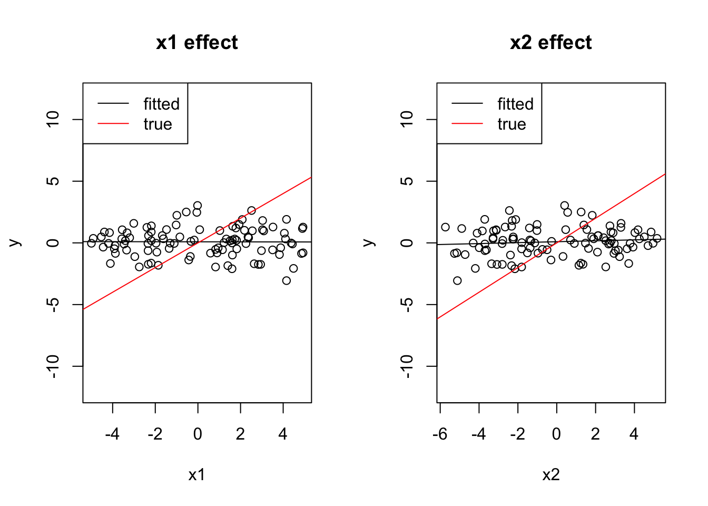
Tip
Maybe you have noted that the residual plots used fitted values as the x axis. This is in general the most parsimonious choice, as there are many predictors in a multiple regression, and each influences the response. However, if running a multiple regression, you should additionally plot residuals against each predictor separately - if doing so, you often see a misfit that doesn’t occur in the res ~ predicted plot.
The resulting regression table already looks a bit intimidating,
summary(fit)
Call:
lm(formula = Ozone ~ Temp + Wind + Solar.R + fMonth, data = airquality)
Residuals:
Min 1Q Median 3Q Max
-40.344 -13.495 -3.165 10.399 92.689
Coefficients:
Estimate Std. Error t value Pr(>|t|)
(Intercept) -74.23481 26.10184 -2.844 0.00537 **
Temp 1.87511 0.34073 5.503 2.74e-07 ***
Wind -3.10872 0.66009 -4.710 7.78e-06 ***
Solar.R 0.05222 0.02367 2.206 0.02957 *
fMonth6 -14.75895 9.12269 -1.618 0.10876
fMonth7 -8.74861 7.82906 -1.117 0.26640
fMonth8 -4.19654 8.14693 -0.515 0.60758
fMonth9 -15.96728 6.65561 -2.399 0.01823 *
---
Signif. codes: 0 '***' 0.001 '**' 0.01 '*' 0.05 '.' 0.1 ' ' 1
Residual standard error: 20.72 on 103 degrees of freedom
(42 observations deleted due to missingness)
Multiple R-squared: 0.6369, Adjusted R-squared: 0.6122
F-statistic: 25.81 on 7 and 103 DF, p-value: < 2.2e-16Luckily, we also have the effect plots to make sense of this:
library(effects)
plot(allEffects(fit, partial.residuals = T) )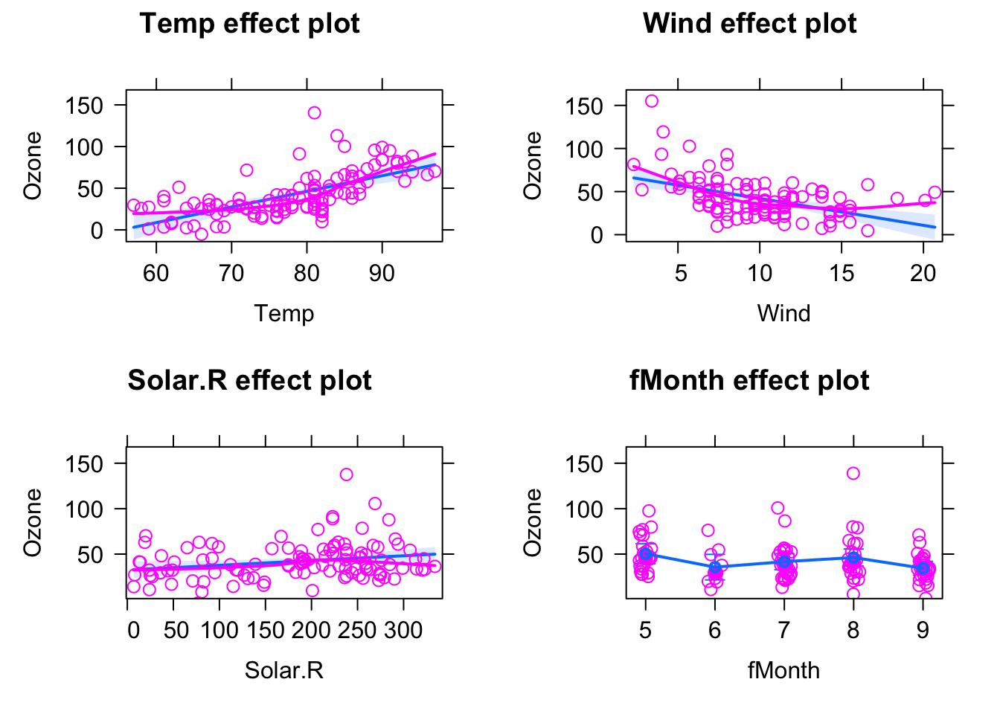
Tip
Note that for the multiple regression, that scatter around the regression line displayed by the effects package is not the raw data, but the so-called partial residuals. Essentially, what this means is that we plot the fitted line for the respective predictor, and then we calculate the residual for the full model (including the other predictors) and add them on the regression line. The advantage is that this subtracts the effect of other predictors, and removes possible spurious correlatins that occur due to collinearity between predictors (see next section).
| Formula | Meaning | Details |
|---|---|---|
y~x_1 |
\(y=a_0 +a_1*x_1\) | Slope+Intercept |
y~x_1 - 1 |
\(y=a_1*x_1\) | Slope, no intercept |
y~I(x_1^2) |
\(y=a_0 + a_1*(x_1^2)\) | Quadratic effect |
y~x_1+x_2 |
\(y=a_0+a_1*x_1+a_2*x_2\) | Multiple linear regression (two variables) |
y~x_1:x_2 |
\(y=a_0+a_1*(x_1*x_2)\) | Interaction between x1 and x2 |
y~x_1*x_2 |
\(y=a_0+a_1*(x_1*x_2)+a_2*x_1+a_3*x_2\) | Interaction and main effects |
2.8 The Effect of Collinearity
A common misunderstanding is that a multiple regression is just a convenient way to run several independent univariate regressions. This, however, is wrong. A multiple regression is doing a fundamentally different thing. Let’s compare the results of the multiple regression above to the simple regression.
fit = lm(Ozone ~ Wind , data = airquality)
summary(fit)
Call:
lm(formula = Ozone ~ Wind, data = airquality)
Residuals:
Min 1Q Median 3Q Max
-51.572 -18.854 -4.868 15.234 90.000
Coefficients:
Estimate Std. Error t value Pr(>|t|)
(Intercept) 96.8729 7.2387 13.38 < 2e-16 ***
Wind -5.5509 0.6904 -8.04 9.27e-13 ***
---
Signif. codes: 0 '***' 0.001 '**' 0.01 '*' 0.05 '.' 0.1 ' ' 1
Residual standard error: 26.47 on 114 degrees of freedom
(37 observations deleted due to missingness)
Multiple R-squared: 0.3619, Adjusted R-squared: 0.3563
F-statistic: 64.64 on 1 and 114 DF, p-value: 9.272e-13The simple regression estimates an effect of Wind that is- 5.55, while in the multiple regression, we had -3.1.
The reason is that a multiple regression estimates the effect of Wind, corrected for the effect of the other variables, while a univariate regression estimates the raw correlation of Ozone and Wind. And this can make a big difference if Wind has correlations with other variables(the technical term is collinear). We can see, e.g., that Wind and Temp are indeed correlated by running
plot(Wind ~ Temp, data = airquality)
In such a case, if Temp is not included in the regression, the effect of Temp will be absorbed in the Wind effect to the extent to which both variables are collinear. In other words, if one variable is missing, there will be a spillover of the effect of this variable to all collinear variables.
Tip
To give a simple example of this spillover, let’s say
- Wind has a positive effect of 1
- Temp has a negative effect of -1
- Wind and Temp are correlated 50%
A multiple regression would estimate 1,-1. In a single regression of Wind against Temp, the collinear part (50%) of the Temp effect would be absorbed by wind, so we would estimate a Wind effect of 0.5.
Note that the same happens in univariate plots of the correlation, i.e. this is not a problem of the linear regression, but rather of looking at the univariate correlation of Ozone ~ Wind without correcting for the effect of Temp.
Also, note that collinearity is not fundamentally a problem for the regression - regression estimates stay unbiased and p-values and CIs calibrated under arbitrary high collinearity. However, the more collinearity we have, the more uncertain regression estimates will become (with associated large p-values). Here an example, where we simulate data under the assumption that x1 and x2 have each an effect of 1
set.seed(123)
x1 = runif(100)
x2 = 0.95 *x1 + 0.05 * runif(100)
y = x1 + x2 + rnorm(100)
summary(lm(y ~ x1 + x2))
Call:
lm(formula = y ~ x1 + x2)
Residuals:
Min 1Q Median 3Q Max
-1.8994 -0.6821 -0.1086 0.5749 3.3663
Coefficients:
Estimate Std. Error t value Pr(>|t|)
(Intercept) -0.1408 0.2862 -0.492 0.624
x1 1.6605 7.0742 0.235 0.815
x2 0.4072 7.4695 0.055 0.957
Residual standard error: 0.9765 on 97 degrees of freedom
Multiple R-squared: 0.2668, Adjusted R-squared: 0.2517
F-statistic: 17.65 on 2 and 97 DF, p-value: 2.91e-07We see that the multiple regression is not terribly wrong, but very uncertain about the true values. Some authors therefore advice to remove collinear predictions. This can sometimes be useful, in particular for predictions (see section on model selection); however, note that the effect of removed predictor will then be absorbed by the remaining predictor(s). In our case, the univariate regression would be very sure that there is an effect, note that the CI does not cover the true effect of x1 (which was 1).
summary(lm(y ~ x1))
Call:
lm(formula = y ~ x1)
Residuals:
Min 1Q Median 3Q Max
-1.9000 -0.6757 -0.1067 0.5799 3.3630
Coefficients:
Estimate Std. Error t value Pr(>|t|)
(Intercept) -0.1295 0.1965 -0.659 0.511
x1 2.0456 0.3426 5.971 3.78e-08 ***
---
Signif. codes: 0 '***' 0.001 '**' 0.01 '*' 0.05 '.' 0.1 ' ' 1
Residual standard error: 0.9715 on 98 degrees of freedom
Multiple R-squared: 0.2668, Adjusted R-squared: 0.2593
F-statistic: 35.65 on 1 and 98 DF, p-value: 3.785e-08
Understanding collinearity spillover in more detail
We can understand the problem of one variable influencing the effect of the other in more detail if we simulate some data. Let’s create 2 positively collinear predictors:
x1 = runif(100, -5, 5)
x2 = x1 + 0.2*runif(100, -5, 5)We can check whether this has worked:
cor(x1, x2)[1] 0.9810774Now, the first case I want to look at, is when the effects for x1 and x2 have equal signs. Let’s create such a situation, by simulating a normal response \(y\), where the intercept is 0, and both predictors have effect = 1:
y = 0 + 1*x1 + 1*x2 + rnorm(100)If you look at the formula, you can nearly visually see what the problem of the univariate regression is: as x2 is nearly identical to x1, the apparent slope between y and either x1 or x2 will be around 2 (although the true effect is 1).
Consequently, the univariate models will estimate too high effect sizes. We also say by taking out one predictor, the remaining one is absorbing the effect of the other predictor.
coef(lm(y ~ x1))(Intercept) x1
0.002362246 2.003283129 coef(lm(y ~ x2))(Intercept) x2
-0.08366353 1.91355593 The multivariate model, on the other hand, gets the right estimates (with a bit of error):
coef(lm(y~x1 + x2))(Intercept) x1 x2
-0.03627352 1.05770683 0.92146207 You can also see this visually:
par(mfrow = c(1, 2))
plot(x1, y, main = "x1 effect", ylim = c(-12, 12))
abline(lm(y ~ x1))
# Draw a line with intercept 0 and slope 1,
# just like we simulated the true dependency of y on x1:
abline(0, 1, col = "red")
legend("topleft", c("fitted", "true"), lwd = 1, col = c("black", "red"))
plot(x2, y, main = "x2 effect", ylim = c(-12, 12))
abline(lm(y ~ x2))
abline(0, 1, col = "red")
legend("topleft", c("fitted", "true"), lwd = 1, col = c("black", "red"))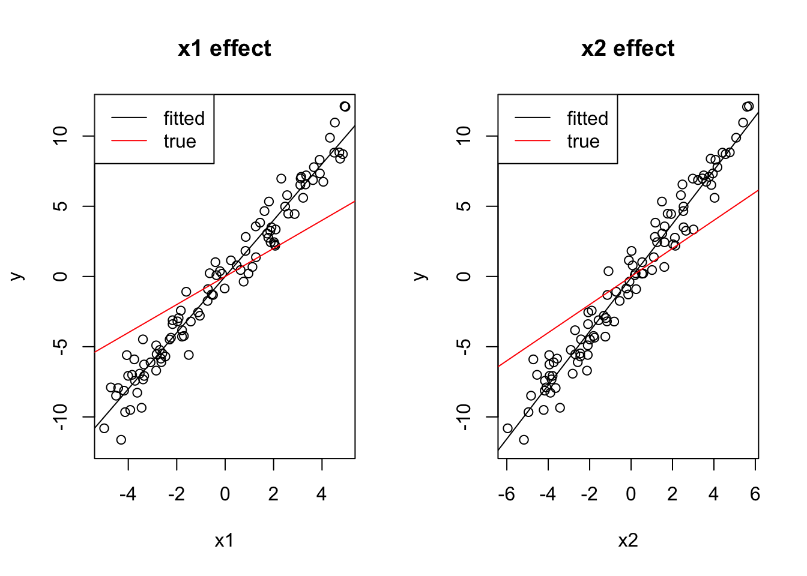
Check what happens if the 2 effects have opposite sign.
x1 = runif(100, -5, 5)
x2 = -x1 + 0.2*runif(100, -5, 5)
y = 0 + 1*x1 + 1*x2 + rnorm(100)
cor(x1, x2)[1] -0.9804515coef(lm(y ~ x1))(Intercept) x1
-0.03467159 -0.01170653 coef(lm(y ~ x2))(Intercept) x2
-0.04036562 0.04795055 par(mfrow = c(1, 2))
plot(x1, y, main = "x1 effect", ylim = c(-12, 12))
abline(lm(y ~ x1))
abline(0, 1, col = "red")
legend("topleft", c("fitted", "true"), lwd = 1, col = c("black", "red"))
plot(x2, y, main = "x2 effect", ylim = c(-12, 12))
abline(lm(y ~ x2))
abline(0, 1, col = "red")
legend("topleft", c("fitted", "true"), lwd = 1, col = c("black", "red"))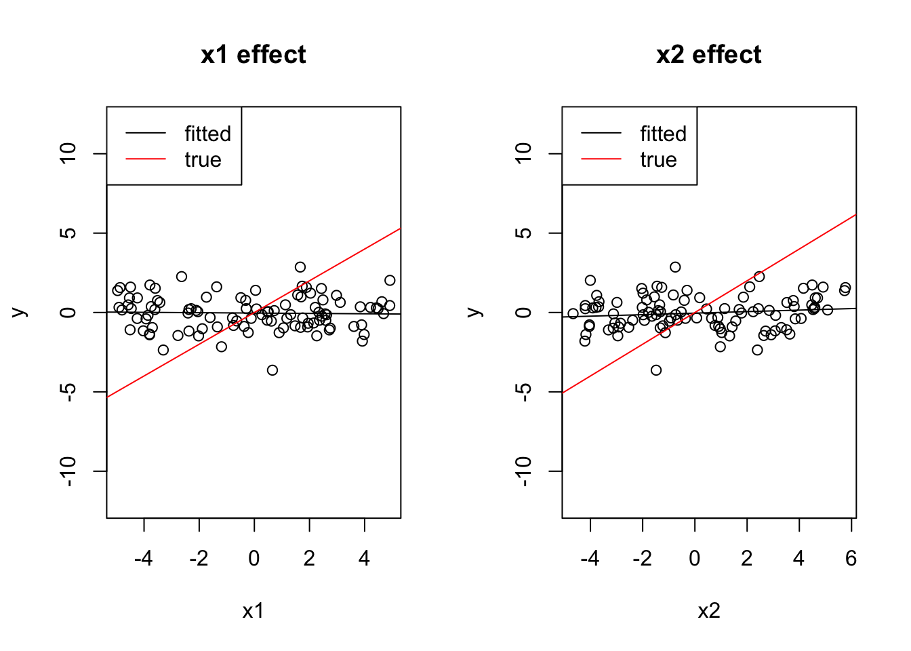
coef(lm(y~x1 + x2))(Intercept) x1 x2
-0.04622019 0.91103840 0.94186191 Both effects cancel out.
2.9 Centering and Scaling of Predictor Variables
2.9.1 Centering
In our multiple regression, we saw an intercept of -74. Per definition, the intercept is the predicted value for \(y\) (Ozone) at a value of 0 for all other variables. It’s fine to report this, as long as we are interested in this value, but often the value at predictor = 0 is not particularly interesting. In this specific case, a value of -74 clearly doesn’t make sense, as Ozone concentrations can only be positive.
To explain what’s going on, let’s look at the univariate regression against Temp:
fit = lm(Ozone ~ Temp, data = airquality)
summary(fit)
Call:
lm(formula = Ozone ~ Temp, data = airquality)
Residuals:
Min 1Q Median 3Q Max
-40.729 -17.409 -0.587 11.306 118.271
Coefficients:
Estimate Std. Error t value Pr(>|t|)
(Intercept) -146.9955 18.2872 -8.038 9.37e-13 ***
Temp 2.4287 0.2331 10.418 < 2e-16 ***
---
Signif. codes: 0 '***' 0.001 '**' 0.01 '*' 0.05 '.' 0.1 ' ' 1
Residual standard error: 23.71 on 114 degrees of freedom
(37 observations deleted due to missingness)
Multiple R-squared: 0.4877, Adjusted R-squared: 0.4832
F-statistic: 108.5 on 1 and 114 DF, p-value: < 2.2e-16Now, the intercept is -146. We can see the reason more clearly when we plot the results:
plot(Ozone ~ Temp, data = airquality, xlim = c(-10, 110), ylim = c(-200, 170))
abline(fit)
abline(h = 0, lty = 2)
abline(v = 0, lty = 2)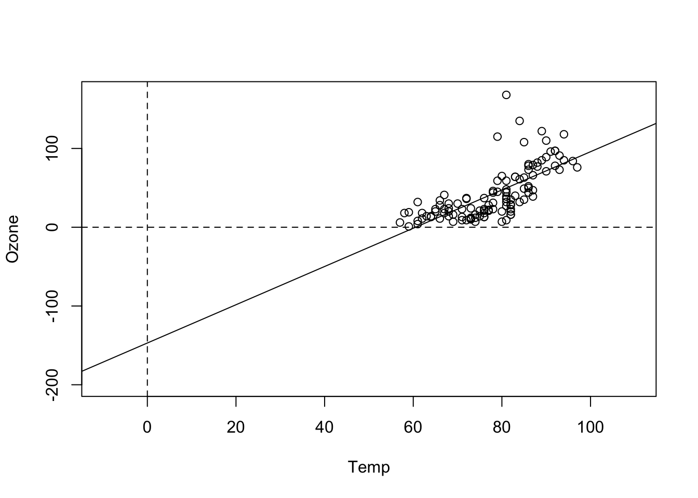
That shows us that the value 0 is far outside of the set of our observed values for Temp, which is measured in Fahrenheit. Thus, we are extrapolating the Ozone far beyond the observed data. To avoid this, we can simply re-define the x-Axis, by subtracting the mean, which is called centering:
airquality$cTemp = airquality$Temp - mean(airquality$Temp)Alternatively, you can center with the build-in R command scale
airquality$cTemp = scale(airquality$Temp, center = T, scale = F)Fitting the model with the centered variable moves the intercept line in the middle of the predictor range
fit = lm(Ozone ~ cTemp, data = airquality)
plot(Ozone ~ cTemp, data = airquality)
abline(fit)
abline(v = 0, lty = 2)
which produces a more interpretable value for the intercept: when we center, the intercept of the centered variable can be interpreted as the Ozone concentrate at the mean temperature. For a univariate regression, this value will also typically be very similar to the grand mean mean(airquality$Ozone).
summary(fit)
Call:
lm(formula = Ozone ~ cTemp, data = airquality)
Residuals:
Min 1Q Median 3Q Max
-40.729 -17.409 -0.587 11.306 118.271
Coefficients:
Estimate Std. Error t value Pr(>|t|)
(Intercept) 42.1576 2.2018 19.15 <2e-16 ***
cTemp 2.4287 0.2331 10.42 <2e-16 ***
---
Signif. codes: 0 '***' 0.001 '**' 0.01 '*' 0.05 '.' 0.1 ' ' 1
Residual standard error: 23.71 on 114 degrees of freedom
(37 observations deleted due to missingness)
Multiple R-squared: 0.4877, Adjusted R-squared: 0.4832
F-statistic: 108.5 on 1 and 114 DF, p-value: < 2.2e-16
Caution
There is no simple way to center categorical variables for a fixed effect model. Thus, note that if you center, the intercept is predicted for the reference group of all categorical variables, evaluated at value of the mean for all numeric variables. However, as we will see later, random effects, among other things, are a means to center categorical variables, as they estimate a grand mean over all groups.
2.9.2 Scaling
Another very common transformation is to divide the x axis by a certain value to bring all variables on a similar scale. This is called scaling.
The main motivation for scaling is to make effect sizes in a multiple regression more comparable. As an example, look again at the multiple regression with 4 predictors:
airquality$fMonth = factor(airquality$Month)
fit = lm(Ozone ~ Temp + Wind + Solar.R + fMonth, data = airquality)
summary(fit)
Call:
lm(formula = Ozone ~ Temp + Wind + Solar.R + fMonth, data = airquality)
Residuals:
Min 1Q Median 3Q Max
-40.344 -13.495 -3.165 10.399 92.689
Coefficients:
Estimate Std. Error t value Pr(>|t|)
(Intercept) -74.23481 26.10184 -2.844 0.00537 **
Temp 1.87511 0.34073 5.503 2.74e-07 ***
Wind -3.10872 0.66009 -4.710 7.78e-06 ***
Solar.R 0.05222 0.02367 2.206 0.02957 *
fMonth6 -14.75895 9.12269 -1.618 0.10876
fMonth7 -8.74861 7.82906 -1.117 0.26640
fMonth8 -4.19654 8.14693 -0.515 0.60758
fMonth9 -15.96728 6.65561 -2.399 0.01823 *
---
Signif. codes: 0 '***' 0.001 '**' 0.01 '*' 0.05 '.' 0.1 ' ' 1
Residual standard error: 20.72 on 103 degrees of freedom
(42 observations deleted due to missingness)
Multiple R-squared: 0.6369, Adjusted R-squared: 0.6122
F-statistic: 25.81 on 7 and 103 DF, p-value: < 2.2e-16So, which of the predictors is the strongest (= largest effect on the response)? Superficially, it looks as if Month has the highest values. But we have to remember that the effect on the response is \(y = \text{regression estimate} * \text{predictor}\), i.e if we have a predictor with a large range (difference between min/max values), it may have a strong effect even though the estimate is small. So, if the predictors have a different range, we cannot compare effect sizes directly regarding their “effective influence” on y.
To make the effect sizes comparable, we can scale all numeric predictors by dividing them by their standard deviation, which will bring them all roughly on a range between -2, 2. You can do this by hand, or use the scale() function in R:
Tip
By default, the scale(...) function will scale and center. As discussed before, centering is nearly always useful as it improves the interpretability of the intercept, so I would suggest to use this as a default when scaling.
airquality$sTemp = scale(airquality$Temp)
airquality$sWind = scale(airquality$Wind)
airquality$sSolar.R = scale(airquality$Solar.R)
Tip
Here, I create a new variable for each scaled predictor. It is possible to use the scale() command inside the regression formula as well, but that sometimes creates problems with downstream plotting functions, so I recommend to create a new variable in your data for scaling.
Running the regression:
fit = lm(Ozone ~ sTemp + sWind + sSolar.R + fMonth, data = airquality)
summary(fit)
Call:
lm(formula = Ozone ~ sTemp + sWind + sSolar.R + fMonth, data = airquality)
Residuals:
Min 1Q Median 3Q Max
-40.344 -13.495 -3.165 10.399 92.689
Coefficients:
Estimate Std. Error t value Pr(>|t|)
(Intercept) 50.558 5.526 9.150 5.74e-15 ***
sTemp 17.748 3.225 5.503 2.74e-07 ***
sWind -10.952 2.325 -4.710 7.78e-06 ***
sSolar.R 4.703 2.131 2.206 0.0296 *
fMonth6 -14.759 9.123 -1.618 0.1088
fMonth7 -8.749 7.829 -1.117 0.2664
fMonth8 -4.197 8.147 -0.515 0.6076
fMonth9 -15.967 6.656 -2.399 0.0182 *
---
Signif. codes: 0 '***' 0.001 '**' 0.01 '*' 0.05 '.' 0.1 ' ' 1
Residual standard error: 20.72 on 103 degrees of freedom
(42 observations deleted due to missingness)
Multiple R-squared: 0.6369, Adjusted R-squared: 0.6122
F-statistic: 25.81 on 7 and 103 DF, p-value: < 2.2e-16As you see, effect sizes have now changed considerably. The difference in interpretation is the following: for the unscaled variables, we estimate the effect of 1 unit change (e.g. 1 degree for temp). For the scaled variable, we estimate the effect of a change of 1 standard deviation. If we look at the sd of temperature
sd(airquality$Temp)[1] 9.46527we can conclude that the scaled regression is estimating an effect of a 9.46527 degree change in temperature.
While the latter is numerically a bit confusing, the advantage is that so we can interpret the Ozone effect scaled to typical temperature differences in the data, and the same for all other variables. Consequently, it makes sense to compare the scaled effect sizes between variables, which suggests that Temp is the most important predictor.
What about categorical variables, do we need to scale them as well? The answer is no, because they are effectively already scaled to a range of 1, because in the standard contrasts (treatment effects), we estimate the effect of going from option 1 to option 2. However, note that because the sd scaling creates a numeric range with a average of +/-1 sd = 2, some authors also scale by 2 sd, so that numeric and categorical variables are more comparable in their effect sizes.
2.10 Interactions
2.10.1 Syntax
When we have multiple variables, we can have the situation that the value of one variable influences the effect of the other(s). Technically, this is called in interaction. In situations where the causal direction is known, this is also called a moderator. An example: Imagine we observe that the effect of aspirin differs depending on the weight of the subject. Technically, we have an interaction between aspirin and weight. Physiologically, we know the causal direction is “weight -> effect of aspirin”, so we can say weight is a moderator for the effect of aspirin.
fit = lm(Ozone ~ Temp * Wind, data = airquality)
plot(allEffects(fit))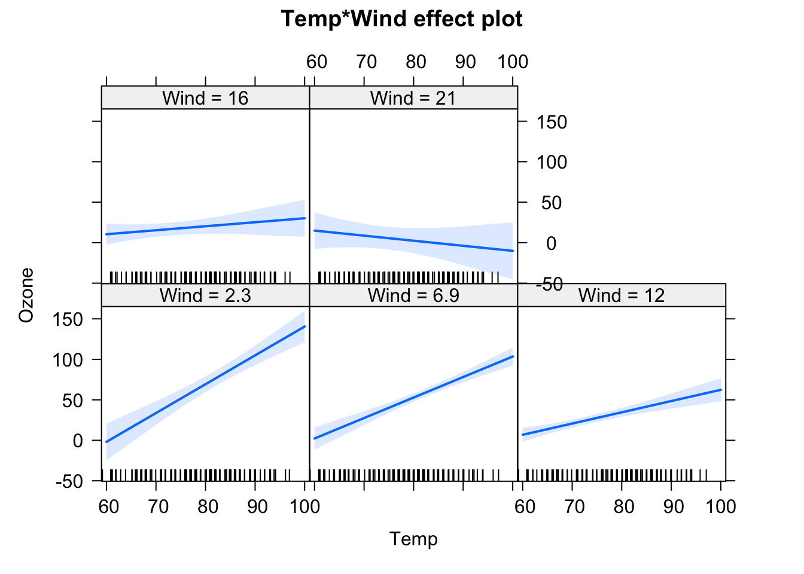
We will have a look at the summary later, but for the moment, let’s just look at the output visually. In the effect plots, we see the effect of Temperature on Ozone for different values of Wind. We also see that the slope changes. For low Wind, we have a strong effect of Temperature. For high Wind, the effect is basically gone.
Let’s look at the interaction syntax in more detail. The “*” operator in an lm() is a shorthand for main effects + interactions. You can write equivalently:
fit = lm(Ozone ~ Wind + Temp + Wind:Temp, data = airquality)What is fit here is literally a third predictor that is specified as Wind * Temp (normal multiplication). The above syntax would allow you to also have interactions without main effects, e.g.:
fit = lm(Ozone ~ Wind + Wind:Temp, data = airquality)Although this is generally never advisable, as the main effect influences the interaction, unless you are sure that the main effect must be zero.
There is another important syntax in R:
fit = lm(Ozone ~ (Wind + Temp + Solar.R)^2 , data = airquality)
summary(fit)
Call:
lm(formula = Ozone ~ (Wind + Temp + Solar.R)^2, data = airquality)
Residuals:
Min 1Q Median 3Q Max
-38.685 -11.727 -2.169 7.360 91.244
Coefficients:
Estimate Std. Error t value Pr(>|t|)
(Intercept) -1.408e+02 6.419e+01 -2.193 0.03056 *
Wind 1.055e+01 4.290e+00 2.460 0.01555 *
Temp 2.322e+00 8.330e-01 2.788 0.00631 **
Solar.R -2.260e-01 2.107e-01 -1.073 0.28591
Wind:Temp -1.613e-01 5.896e-02 -2.735 0.00733 **
Wind:Solar.R -7.231e-03 6.688e-03 -1.081 0.28212
Temp:Solar.R 5.061e-03 2.445e-03 2.070 0.04089 *
---
Signif. codes: 0 '***' 0.001 '**' 0.01 '*' 0.05 '.' 0.1 ' ' 1
Residual standard error: 19.17 on 104 degrees of freedom
(42 observations deleted due to missingness)
Multiple R-squared: 0.6863, Adjusted R-squared: 0.6682
F-statistic: 37.93 on 6 and 104 DF, p-value: < 2.2e-16plot(allEffects(fit), selection = 1)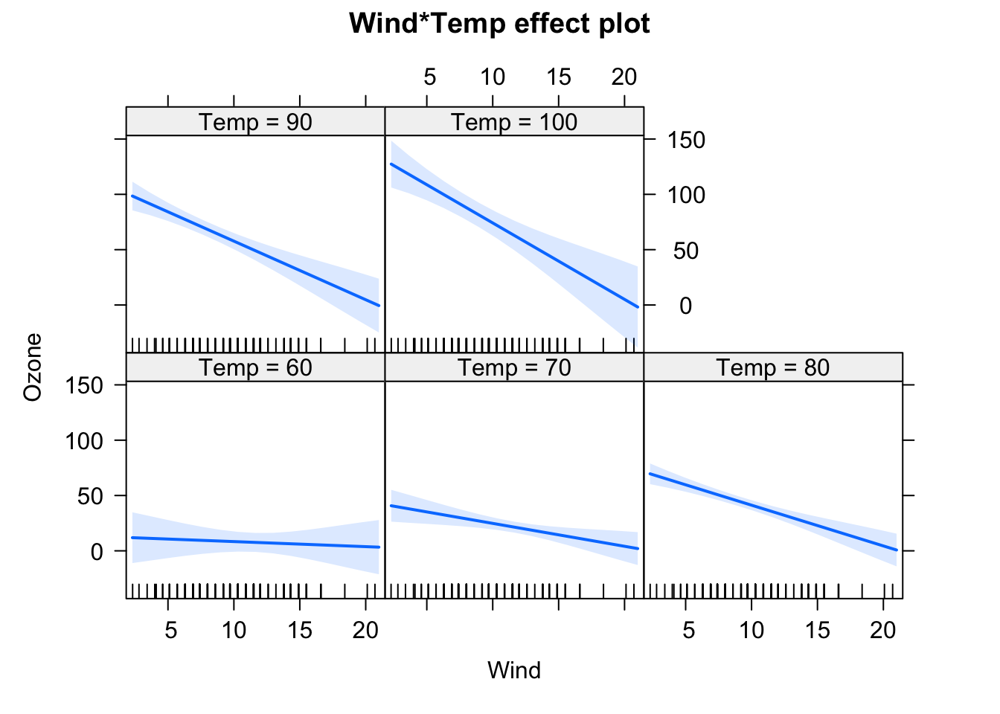
plot(allEffects(fit), selection = 2)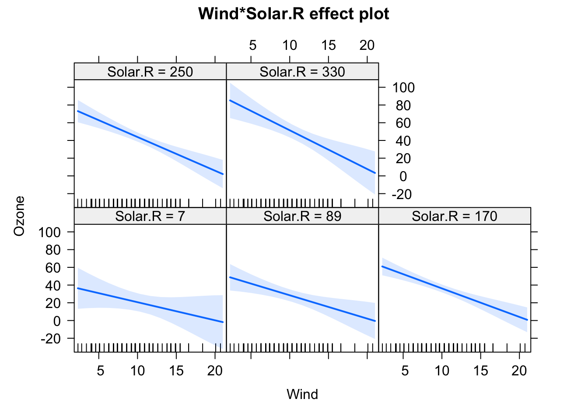
plot(allEffects(fit), selection = 3)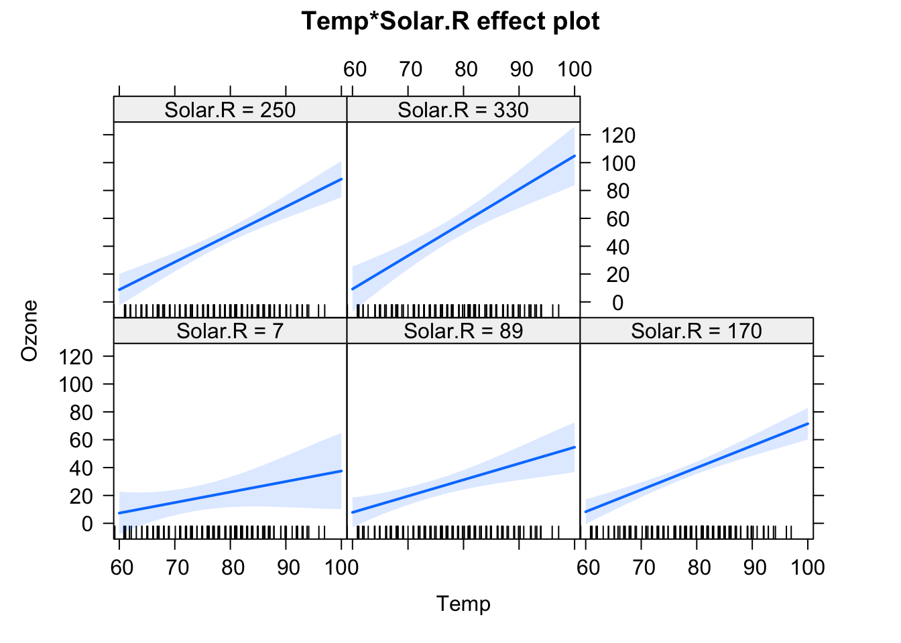
This creates all main effect and second order (aka two-way) interactions between variables. You can also use ^3 to create all possible 2-way and 3-way interactions between the variables in the parentheses. By the way: The ()^2 syntax for interactions is the reason why we have to write I(x^2) if we want to write a quadratic effect in an lm.
2.10.2 Interactions with categorical variables
When you include an interaction with a categorical variable, that means a separate effect will be fit for each level of the categorical variable, as in
fit = lm(Ozone ~ Wind * fMonth, data = airquality)
summary(fit)
Call:
lm(formula = Ozone ~ Wind * fMonth, data = airquality)
Residuals:
Min 1Q Median 3Q Max
-54.528 -12.562 -2.246 10.691 77.750
Coefficients:
Estimate Std. Error t value Pr(>|t|)
(Intercept) 50.748 15.748 3.223 0.00169 **
Wind -2.368 1.316 -1.799 0.07484 .
fMonth6 -41.793 31.148 -1.342 0.18253
fMonth7 68.296 20.995 3.253 0.00153 **
fMonth8 82.211 20.314 4.047 9.88e-05 ***
fMonth9 23.439 20.663 1.134 0.25919
Wind:fMonth6 4.051 2.490 1.627 0.10680
Wind:fMonth7 -4.663 2.026 -2.302 0.02329 *
Wind:fMonth8 -6.154 1.923 -3.201 0.00181 **
Wind:fMonth9 -1.874 1.820 -1.029 0.30569
---
Signif. codes: 0 '***' 0.001 '**' 0.01 '*' 0.05 '.' 0.1 ' ' 1
Residual standard error: 23.12 on 106 degrees of freedom
(37 observations deleted due to missingness)
Multiple R-squared: 0.5473, Adjusted R-squared: 0.5089
F-statistic: 14.24 on 9 and 106 DF, p-value: 7.879e-15The interpretation is like for a single categorical predictor, i.e. we see the effect of Wind as the effect for the first Month 5, and the Wind:fMonth6 effect, for example, tests for a difference in the Wind effect between month 5 (reference) and month 6. As before, you could change this behavior by changing contrasts.
2.10.3 Interactions and centering
A super important topic when working with numeric interactions is centering. To get this started, let’s make a small experiment:
What you should have seen in the models above is that the main effects for Wind / Temp change significantly when the interaction is introduced.
Maybe you know the answer already. If not, consider the following simulation, where we create data with known effect sizes:
# Create predictor variables.
x1 = runif(100, -1, 1)
x2 = runif(100, -1, 1)
# Create response for lm, all effects are 1.
y = x1 + x2 + x1*x2 + rnorm(100, sd = 0.3)
# Fit model, but shift the mean of the predictor.
fit = lm(y ~ x1 * I(x2 + 5))
summary(fit)
Call:
lm(formula = y ~ x1 * I(x2 + 5))
Residuals:
Min 1Q Median 3Q Max
-0.78590 -0.24028 -0.01261 0.23085 0.72614
Coefficients:
Estimate Std. Error t value Pr(>|t|)
(Intercept) -5.52248 0.32056 -17.227 < 2e-16 ***
x1 -3.56776 0.60688 -5.879 5.98e-08 ***
I(x2 + 5) 1.09592 0.06277 17.460 < 2e-16 ***
x1:I(x2 + 5) 0.89799 0.11935 7.524 2.85e-11 ***
---
Signif. codes: 0 '***' 0.001 '**' 0.01 '*' 0.05 '.' 0.1 ' ' 1
Residual standard error: 0.3248 on 96 degrees of freedom
Multiple R-squared: 0.8632, Adjusted R-squared: 0.8589
F-statistic: 201.9 on 3 and 96 DF, p-value: < 2.2e-16plot(allEffects(fit))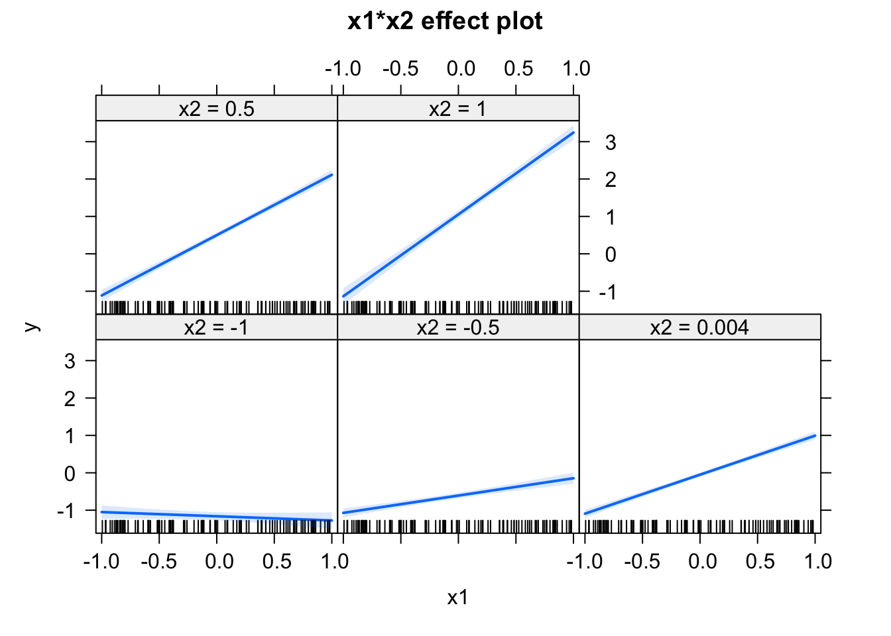
Play around with the shift in x2, and observe how the effects change. Try how the estimates change when centering the variables via the scale() command. If you understand what’s going on, you will realize that you should always center your variables, whenever you use any interactions.
Excellent explanations of the issues also in the attached paper
https://besjournals.onlinelibrary.wiley.com/doi/epdf/10.1111/j.2041-210X.2010.00012.x.
2.10.4 Interactions in GAMs
The equivalent of an interaction in a GAM is a tensor spline. It describes how the response varies as a smooth function of 2 predictors. You can specify a tensor spline with the te() command, as in
library(mgcv)
fit = gam(Ozone ~ te(Wind, Temp) , data = airquality)
plot(fit, pages = 0, residuals = T, pch = 20, lwd = 1.9, cex = 0.4)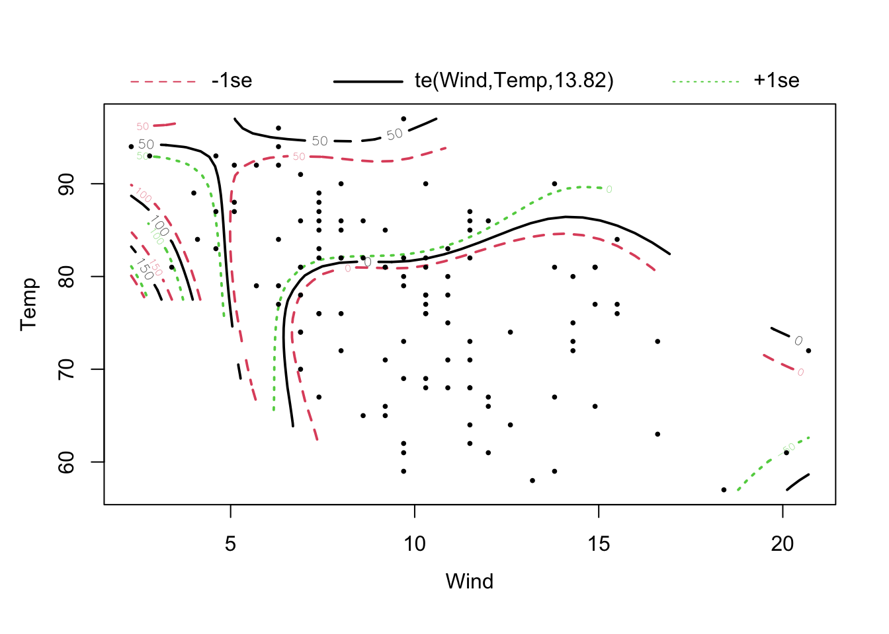
2.11 Predictions
To predict with a fitted model
fit = lm(Ozone ~ Wind, data = airquality)we can use the predict() function.
predict(fit) # predicts on current data
predict(fit, newdata = X) # predicts on new data
predict(fit, se.fit = T)To generate confidence intervals on predictions, we can use se.fit = T, which returns standard errors on predictions. As always, 95% confidence interval (CI) = 1.96 * se.
So, let’s assume we want to predict Ozone with a 95% CI for for wind between 0 and 10:
Wind = seq(0,10,0.1)
newData = data.frame(Wind = Wind)
pred = predict(fit, newdata = newData, se.fit = T)
plot(Wind, pred$fit, type = "l")
lines(Wind, pred$fit - 1.96 * pred$se.fit, lty = 2)
lines(Wind, pred$fit + 1.96 * pred$se.fit, lty = 2)
2.12 Nonparametrics and the bootstrap
The linear model (LM) has the beautiful property that it delivers unbiased estimates, calibrated p-values and all that based on analytical expressions that remain valid, regardless of the sample size. Unfortunately, there are very few extensions of the LM that completely maintain all of these desirable properties for limited sample sizes. The underlying problem is that for more complicated models, there are usually no closed-form solutions for the expected null or sampling distributions, or those distributions depend on the observed data. For that reason, non-parametric methods to generate confidence intervals and p-values are increasingly used when going to more complicated models, which motivates this first small excursion into non-parametric methods, and in particular cross-validation and the bootstrap.
There are two non-parametric methods that you should absolutely know and that form the backbone of basically all non-parametric for regression analyses with statistical and machine learning models. Those two are:
- the bootstrap: generate variance of estimates, allows us to calculate non-parametric CIs and p-values
- cross-validation: generate non-parametric estimates of the predictive error of the model (connects to ANOVA, AIC, see later sections on ANOVA and model selection)
Here, we will look at the bootstrap. Cross-validation will be introduced in the chapter on model selection.
Excursion: randomization null models
Another non-parametric method that you may encounter are randomization null models. Let’s look at this with an example: here, we create data from a normal and a lognormal distribution. We are interested in the difference of the mean of the two (test statistic).
set.seed(1337)
groupA = rnorm(50)
groupB = rlnorm(50)
dat = data.frame(value = c(groupA, groupB), group = factor(rep(c("A", "B"), each = 50)))
plot(value ~ group, data = dat)
# test statistic: difference of the means
reference = mean(groupA) - mean(groupB)We can show mathematically that means of repeated draws from a normal distribution are Student-t distributed, which is why we can use this distribution in the t-test to calculate the probability of a certain deviation from a null expectation. If we work with different distributions, however, we may not be so sure what the null distribution should be. Either we have to do the (possibly very complicated) math to get a closed-form expression for this problem, or we try to generate a non-parametric expectation for the null distribution via a randomization null model.
The idea is that we generate a null expectation for the test statistic by re-shuffling the data in a way that conforms to the null assumption. In this case, we can just randomize the group labels, which means that we assume that both distributions (A,B) are the same (note that this is a bit more than asking if they have the same mean, but for the sake of the example, we are happy with this simplification).
nSim = 5000
nullDistribution = rep(NA, nSim)
for(i in 1:nSim){
sel = dat$value[sample.int(100, size = 100)]
nullDistribution[i] = mean(sel[1:50]) - mean(sel[51:100])
}
hist(nullDistribution, xlim = c(-2,2))
abline(v = reference, col = "red")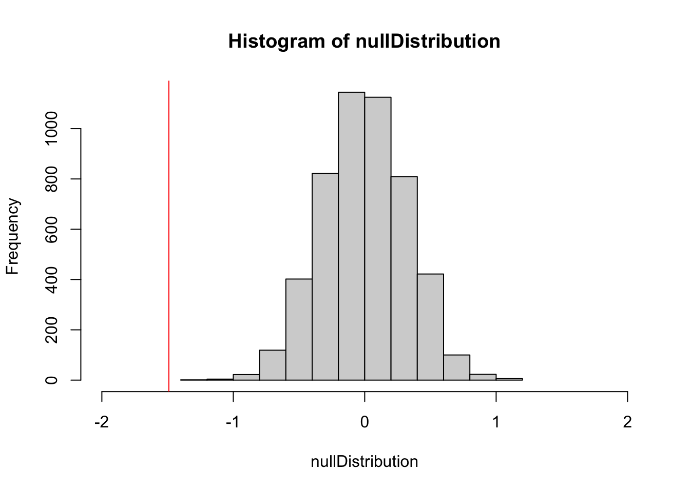
ecdf(nullDistribution)(reference) # 1-sided p-value[1] 0Voila, we have a p-value, and it is significant. Randomization null models are used in many R packages where analytical p-values are not available, e.g., in the packages vegan (ordinations, community analysis) and bipartide (networks).
2.12.1 Non-parametric bootstrap
The key problem to calculate parametric p-values or CIs is that we need to know the distribution of the statistics of interest that we would obtain if we (hypothetically) repeated the experiment many times. The bootstrap generates new data so that we can approximate this distribution. There are two variants of the bootstrap:
- Non-parametric bootstrap: we sample new data from the old data with replacement
- Parametric bootstrap: we sample new data from the fitted model
Let’s first look at the non-parametric bootstrap, using a simple regression of Ozone ~ Wind
fit = lm(Ozone ~ Wind, data = airquality)First, for convenience, we generate a function that extracts the estimate that we want to bootstrap from a fitted model. I decided to extract the slope estimate for Wind, but you could make difference choices
getEstimate <- function(model){
coef(model)[2]
}
getEstimate(fit) Wind
-5.550923 Next, we perform the non-parametric bootstrap
performBootstrap = function(){
sel = sample.int(n = nrow(airquality), replace = T)
fitNew = lm(Ozone ~ Wind, data = airquality[sel,])
return(getEstimate(fitNew))
}
bootstrappedEstimate = replicate(1000, performBootstrap())The bootstrapped estimates of the slope can basically be interpreted as the uncertainty of the slope estimate.
hist(bootstrappedEstimate, breaks = 50)
abline(v = mean(bootstrappedEstimate), col = "red", lwd = 2)
abline(v = getEstimate(fit), col = "red", lwd = 2, lty = 2)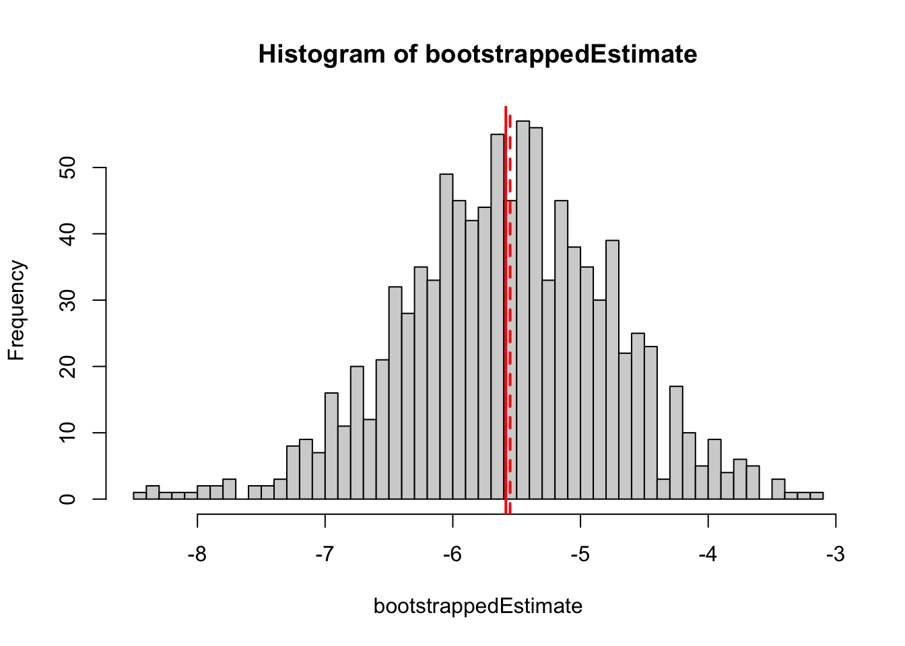
sd(bootstrappedEstimate)[1] 0.8314342We estimate a standard error of 0.84, slightly higher than the parametric error of 0.69 returned by summary.lm()
summary(fit)
Call:
lm(formula = Ozone ~ Wind, data = airquality)
Residuals:
Min 1Q Median 3Q Max
-51.572 -18.854 -4.868 15.234 90.000
Coefficients:
Estimate Std. Error t value Pr(>|t|)
(Intercept) 96.8729 7.2387 13.38 < 2e-16 ***
Wind -5.5509 0.6904 -8.04 9.27e-13 ***
---
Signif. codes: 0 '***' 0.001 '**' 0.01 '*' 0.05 '.' 0.1 ' ' 1
Residual standard error: 26.47 on 114 degrees of freedom
(37 observations deleted due to missingness)
Multiple R-squared: 0.3619, Adjusted R-squared: 0.3563
F-statistic: 64.64 on 1 and 114 DF, p-value: 9.272e-13In R, you don’t have to code the bootstrap by hand, you can also use the boot package. The code will not neccessarily be shorter, because you still need to code the statistics, but it offers a few convenient downstream functions for CIs etc.
Code for same example using the boot package
# see help, needs arguments d = data, k = index
getBoot = function(d, k){
fitNew = lm(Ozone ~ Wind, data = d[k,])
return(getEstimate(fitNew))
}
library(boot)
Attaching package: 'boot'The following object is masked from 'package:survival':
amlb1 = boot(airquality, getBoot, R = 1000)
b1
ORDINARY NONPARAMETRIC BOOTSTRAP
Call:
boot(data = airquality, statistic = getBoot, R = 1000)
Bootstrap Statistics :
original bias std. error
t1* -5.550923 -0.04177248 0.81135222.12.2 Parametric bootstrap
The non-parametric bootstrap does the same thing, but the data is not re-sampled, but generated from the fitted model. This can be done conveniently in R as long as the regression package implements a simulate() function that works on the fitted model.
performBootstrapParametric = function(){
newData = model.frame(fit)
newData$Ozone = unlist(simulate(fit))
fitNew = lm(Ozone ~ Wind, data = newData)
return(getEstimate(fitNew))
}
bootstrappedEstimateParametric = replicate(1000,
performBootstrapParametric())In the results, we see that the parametric boostrap is much closer to the analytical results
hist(bootstrappedEstimateParametric, breaks = 50)
abline(v = mean(bootstrappedEstimateParametric), col = "red", lwd = 2)
abline(v = getEstimate(fit), col = "red", lwd = 2, lty = 2)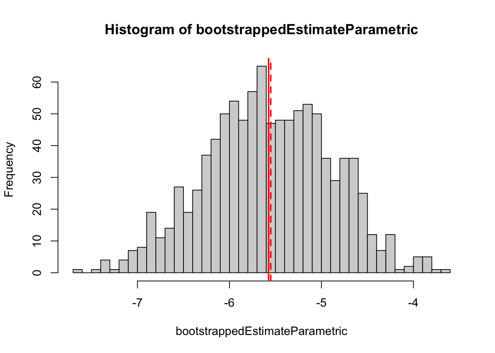
sd(bootstrappedEstimateParametric)[1] 0.6835152
Code for same example using the boot package
For the parametric boostrap, we just need a function of the data to return the estimate
getBoot = function(d){
fitNew = lm(Ozone ~ Wind, data = d)
return(getEstimate(fitNew))
}Plus, we need a function that generates the simulations.
rgen = function(dat, mle){
newData = model.frame(mle)
newData$Ozone = unlist(simulate(mle))
return(newData)
}The call to boot is then
b2 = boot(airquality, getBoot, R = 1000, sim = "parametric", ran.gen = rgen, mle = fit)
b2
PARAMETRIC BOOTSTRAP
Call:
boot(data = airquality, statistic = getBoot, R = 1000, sim = "parametric",
ran.gen = rgen, mle = fit)
Bootstrap Statistics :
original bias std. error
t1* -5.550923 0.02205086 0.6735757